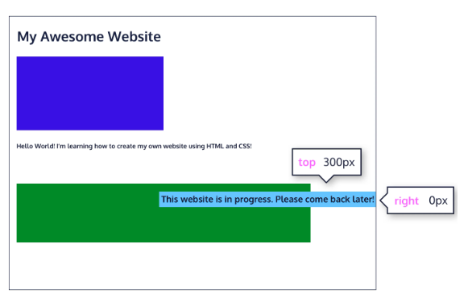

If you use static positioning, the
top, bottom, left and right properties do not have the
effect.
If you use the relative positioning, the element moves relative it's original position (static position).
.box {
position: relative;
top: 20px;
left: 10px;
}
top – moves the element down from the top.bottom – moves the element up from the bottom.left – moves the element away from the left side (to the right).right – moves the element away from the right side (to the left).In this case the box is going to move 20px down. The other elements will be not affected by its movement.
The offset properties can be used to adjust its final position from that reference point. Take a look at the image below:

The "This website is in progress. Please come back later!" is displaced from its static position at the top left corner of its parent container, which is the main white area in the image. It is positioned using absolute positioning, with offset properties of top: 300px; and right: 0px; moving it 300 pixels down and aligning it with the right edge of the parent container. This absolute positioning causes other elements on the page to ignore it as if it is not part of the regular document flow.
Position fixed is fixed to the viewpoint. So if the user scrolls the element will stay in place, while all other elements on the page will move.
Is removed from the document flow.
Since static and relative positioned elements stay in the normal flow of the document, when a user scrolls the page (or parent element) these elements will scroll too. And since fixed and absolute positioned elements are removed from the document flow, when a user scrolls, these elements will stay at their specified offset position.
The sticky value is another position value that keeps an element in the document flow as the user scrolls, but sticks to a specified position as the page is scrolled further. This is done by using the sticky value along with the familiar offset properties, as well as one new one.
An element with position: sticky; toggles between a relative and fixed position, depending on the scroll position.
Is not removed from the document flow.
A sticky element is positioned relative until a certain scroll position is reached - then it "sticks" in that place (like position:fixed).
Z index is the property that only works with positioned elements. The index values are the numbers. The higher the value is the more closer to the user the element is, the lower the number is, the more at the back the element is.
Controls stacking order of positioned elements. Higher z-index appears on top.
💡 Key Tip: Z-index only works on positioned elements!
.box {
position: relative;
top: 20px;
left: 10px;
z-index: 2;
}